Manual de conexión entre BigQuery (Google Cloud) y PowerBi
(Azure Cloud) pasando por DataBricks.
Descripción del objetivo del manual
Visualizar en PowerBI los datos abiertos relacionados con el COVID-19 almacenados en
Google Cloud (GCP)
Descripción general del proceso
El proceso a que será descrito de manera detallada a continuación, genera un flujo de
datos que tiene origen en un conjunto de datos abiertos de google
(https://console.cloud.google.com/marketplace/product/bigquery-public-datasets/covid19-
public-data-program), el cuál es capturado en un proyecto de BigQuery herramienta de
Google Cloud, desde dónde es extraído a través de la herramienta Azure Dataflow bajo
autenticación OAuth 2.0 (Claves generadas desde la consola de desarrolladores), estos
datos terminan almacenados en una Blob Storage de Azure (dentro de su respectivo
contenedor). Desde esa ubicación son cargados a un cluster de Azure Databricks usando
una conexión JDBC, posteriormente se les realizan algunos procesamientos y consultas
para finalmente a través de un conector de PowerBI visualizar la información resultante.
¿Qué vamos a necesitar?
Si es la primera vez que se crean las cuentas relacionadas con las nubes (Azure y
Google Cloud) se reciben créditos gratuitos para usar en los servicios.
Instrucciones
Estas instrucciones, asumen que las cuentas han sido creadas antes de iniciar el proceso.
Las herramientas están configuradas en español por lo que si su versión está en inglés
podrían diferir los nombres.
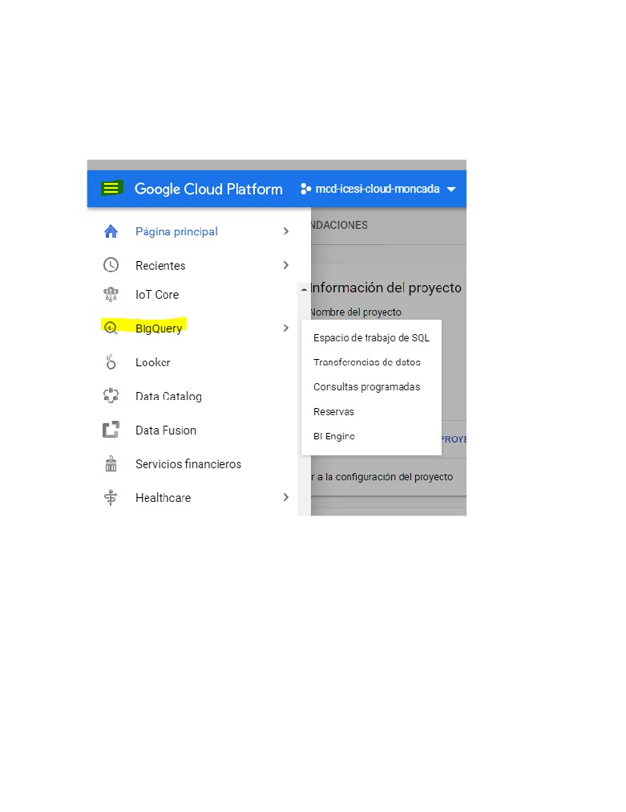
Parte 1 (Preparación de los datos en BigQuery)
procesa a realizar el acceso a la herramienta BigQuery, la imagen a continuación
describe el ingreso (las zonas marcadas en amarillo, muestran los puntos de contacto).
b. Una vez adentro de BigQuery, seleccione en el menú izquierdo la opción marcado
como espacio de trabajo de SQL, una vez presionado se despliega un espacio marcado
como Explorador, en los tres puntos verticales ubicados en el lado superior izquierdo
del Explorador presione (+AGREGAR DATOS) y de ahí en la opción (Explorar conjuntos
de datos ppúblicos).
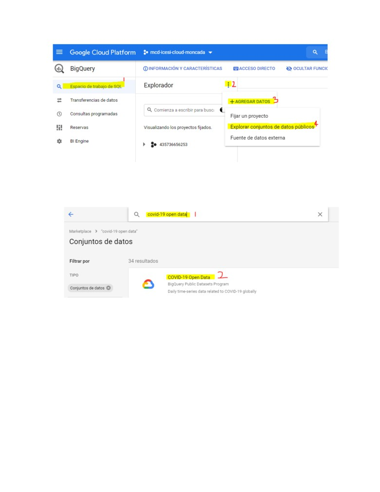
c. La acción del paso (b) genera el despliegue de una nueva ventana, una vez ahí
introduzca el texto: “covid-19 open data” en la barra de búsqueda y seleccione el
resultado etiquetado como: “COVID-19 Open Data”, la imagen a continuación muestra
el proceso:
d. En la ventana desplegada tras la selección del paso (c), presione en el botón “Ver
Conjunto de Datos”͘ Esto generará que regrese a la ventana anterior, pero en su
explorador se habrá fijado un nuevo proyecto (ver paso e).
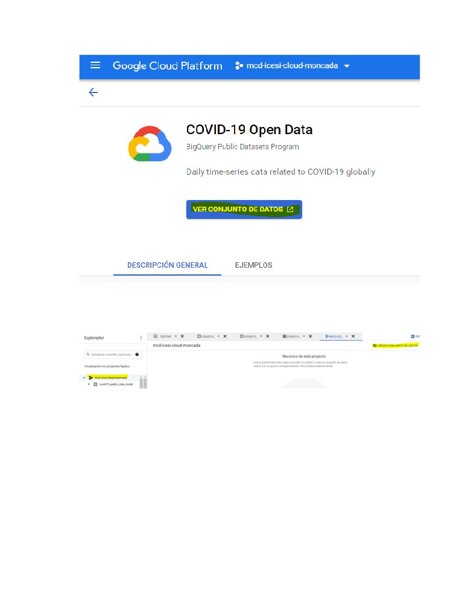
e. Ahora vamos a crear un conjunto de datos en nuestro proyecto, sobre el cuál
copiaremos los datos del proyecto de datos abiertos
f. Seleccione su proyecto y posteriormente en el área de trabajo (a la derecha del
explorador) presione el botón “Crear Conjunto de Datos”
g. En la ventana lateral que despliega el botón, indique el nombre del conjunto de datos,
marque predeterminada, sin vencimiento y clave administrada por google. Finalmente
presione “Crear conjunto de datos” en la parte inferior.
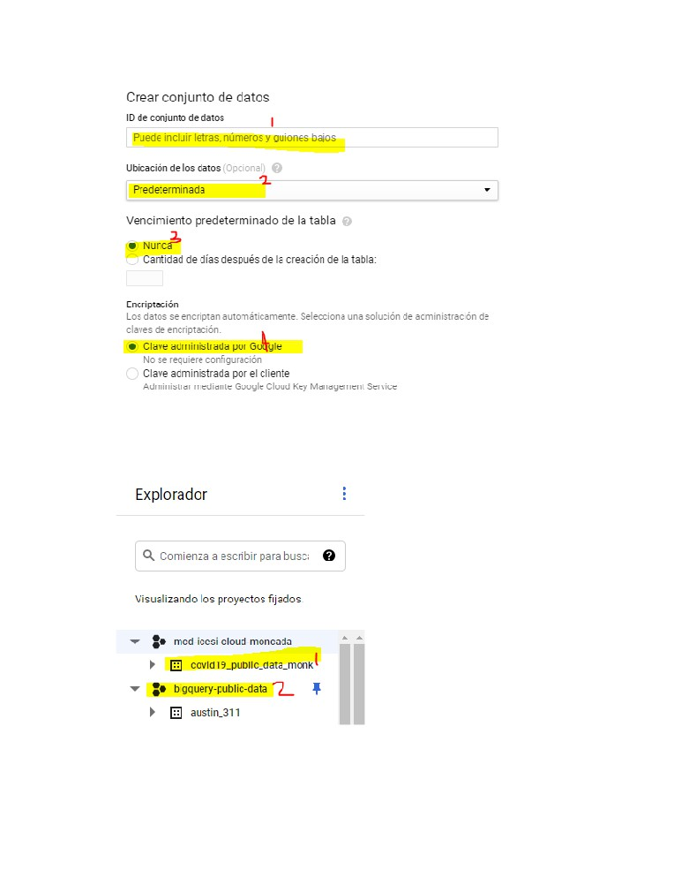
h. La acción previa generó un conjunto de datos asociados a su proyecto (1 en la
siguiente imagen), pero por ahora no tiene ninguna tabla, vamos ahora a traer los
datos del proyecto de datos abiertos (2 en la siguiente imagen).
i.
En la ventana del explorador ahora usted tiene además de su proyecto un proyecto
llamado: “bigquery-public-data” (agregado en el paso (d)). Al desplegar este usted
verá los conjuntos de datos disponibles:
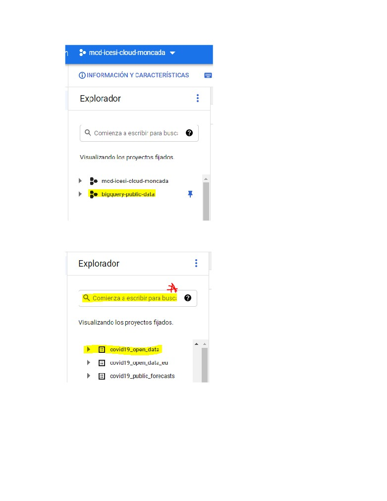
j.
Dentro de los datos desplegados en el paso (i), busque uno llamado:
“covid_19_open_data”, si lo prefiere use este texto en el buscador para acelerar el
proceso.
k. Ahora necesitamos transferir estos datos del proyecto de datos abiertos al proyecto
personal, para esto seleccione el conjunto de datos con el nombre indicado en el paso
(j) y en la información desplegada en el área de trabajo (a la derecha del explorador),
identifique y presione el botón con nombre “Copiar conjunto de datos” (2 en la
imagen siguiente).
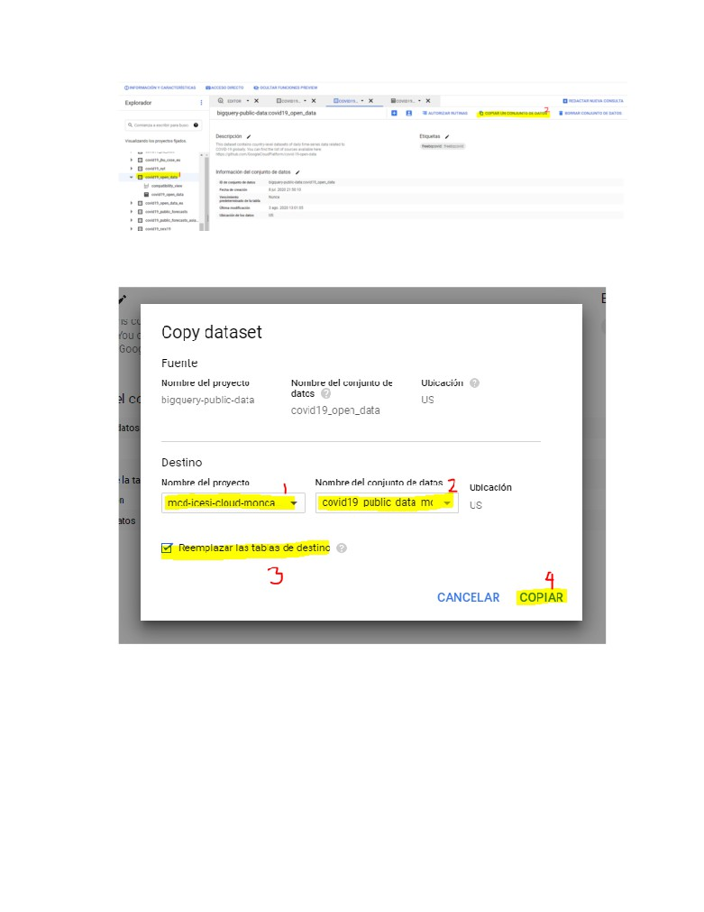
l.
El paso (k) ha desplegado una ventana emergente, seleccione en esta el nombre del
proyecto(1) y el conjunto de datos en el cuál desea copiar(2), marque la opción de
reemplazo de tablas y presione el botón “copiar”(4).
m. Hecho el paso previo vamos a copiar la tabla de datos, pero ahora debemos activar las
transferencias de datos, esto se hace presionando en la opción “Transferencia de
datos” ubicada en el lado izquierdo debajo de la opción “Espacio de trabajo de SQL”
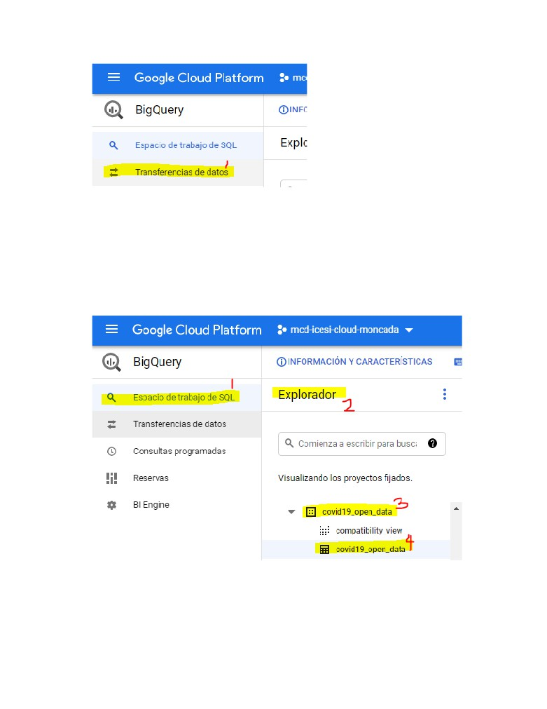
n. Con esta opción de transferencia seleccionada, presione activar en el API de
transferencias y una vez completado el proceso proceda de regreso a la opción
“Espacio de trabajo SQL” para realizar la copia de la tabla͘ (no funciona el paso
siguiente si no se activa la API)
o. Estando ubicado en el “Espacio de trabajo SQL” (1), seleccione en el “Explorador” (2) el
proyecto de datos abiertos, y busque nuevamente el conjunto de datos
“covid19_open_data” (3), seleccione la tabla “covid19_open_data” (4)͘ La imagen a
continuación muestra los números.
p. Con la tabla seleccionada, presione el botón “copiar tabla” disponible en el lado
derecho del área de trabajo en la parte superior.
q. En la ventana emergente lanzada por el botón seleccione la opción “buscar un
proyecto” (1), después seleccione su proyecto personal (2) y el conjunto de datos que
creamos antes en su proyecto (3), finalmente introduzca el nombre de la tabla que se
creará en su proyecto personal (4) y para terminar presione el botón copiar (5).
r. La última acción debe dejar disponibles los datos dentro del proyecto personal (1),
dentro de un conjunto de datos (2) y en la tabla con el nombre que le haya asignado
(3).
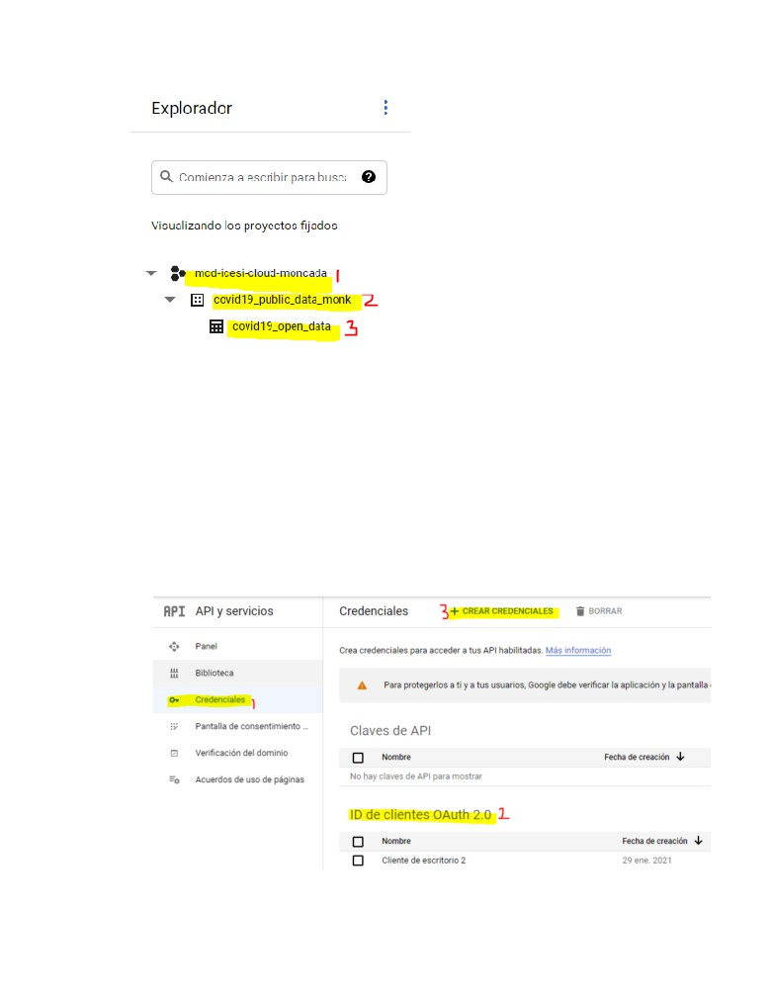
Parte 2 (Preparación de las credenciales de conexión entre GCP y
Azure)
Durante esta parte vamos a usar la consola de desarrolladores de google
a. Estando en la consola de google, en el menú lateral izquierdo seleccione la opción
“Credenciales” (1), vamos a crear una credencial de tipo O uth 2͘0 (2) y para ellos
debemos presionar en “+Crear Credenciales”͘ (Asegurarse de tener seleccionado el
proyecto correcto en la parte superior)
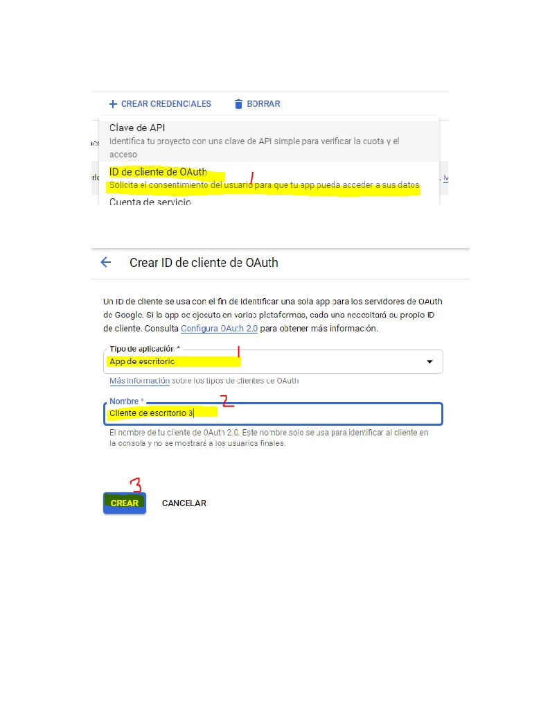
b. En el desplegable seleccione: “ID de cliente de O uth”
c. En la ventana seleccione como tipo de aplicación “ pp de escritorio” (1), después
inserte el nombre que desee para la aplicación (2) y finalmente presione “crear” (3)
d. En la ventana siguiente, debes copiar los datos de ID de cliente y secreto de cliente
(déjalos en un bloc de notas), los vamos a necesitar más adelante. Si lo cerraste y no lo
copiaste, puedes ver estos datos al presionar sobre el ID de cliente en la sección de
credenciales.
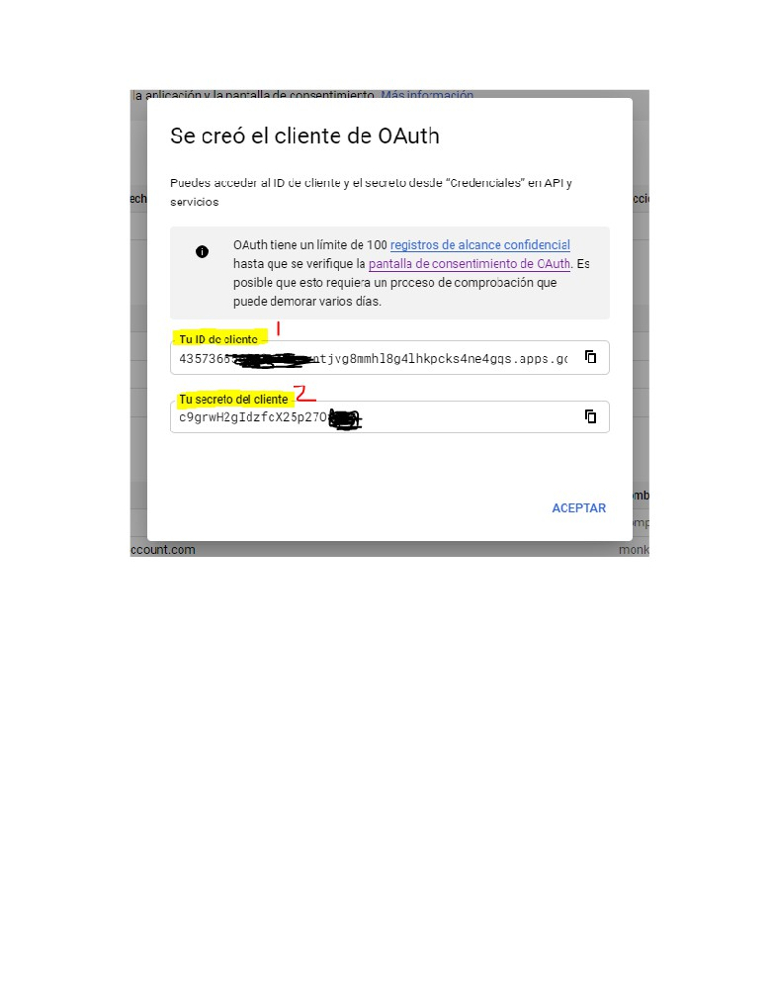
e. Con los códigos generados vamos a crear un token de autenticación, para ellos vamos
a usar la siguiente dirección web, Ojo: Debes reemplazar: =<Your-client-Id> por el ID
de cliente que acabas de copiar.
Id>&redirect_uri=urn:ietf:wg:oauth:2.0:oob&state=GBQAUthTest&access_type=offlin
f. Al pegarlo en tu navegador, debes ver una entrada de cuenta, selecciona la cuenta
Gmail que tiene el acceso a Google Cloud Platform (GCP). Accede con los datos de
login.
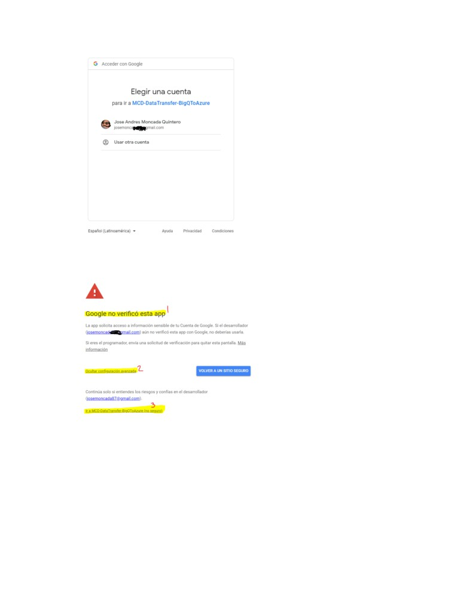
g. Si recibes un mensaje que dice “Google no verificó esta app”, debes presionar en
configuración avanzada y en ir al app.
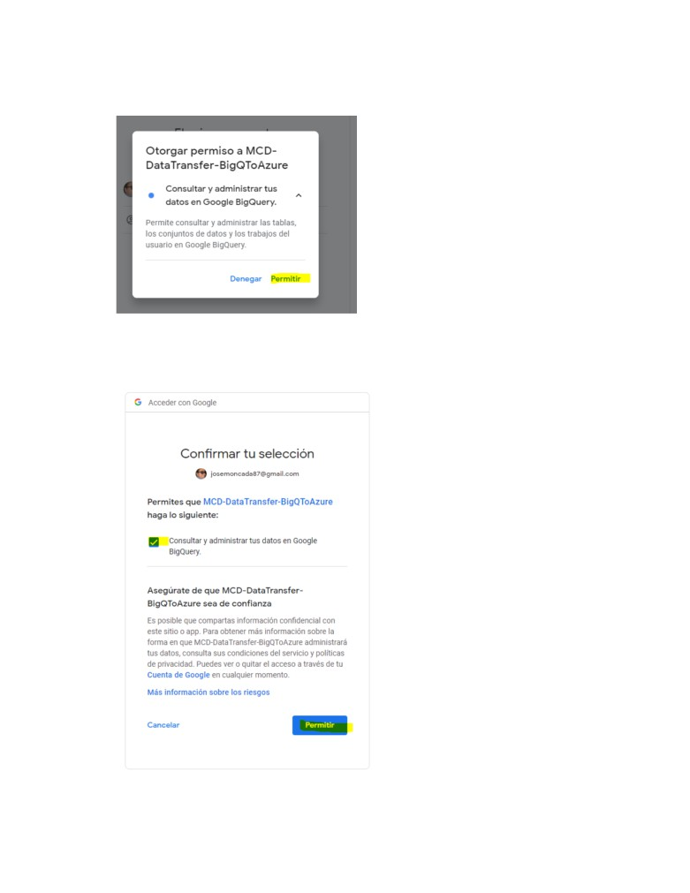
h. Marcar permitir en la siguiente ventana, si los permisos de la imagen no coinciden
asegúrate de haber creado la cuenta asignando los permisos al usuario.
i.
Verificar la selección de: “Consultar y administrar tus datos en Google BigQuery” y
después en permitir.
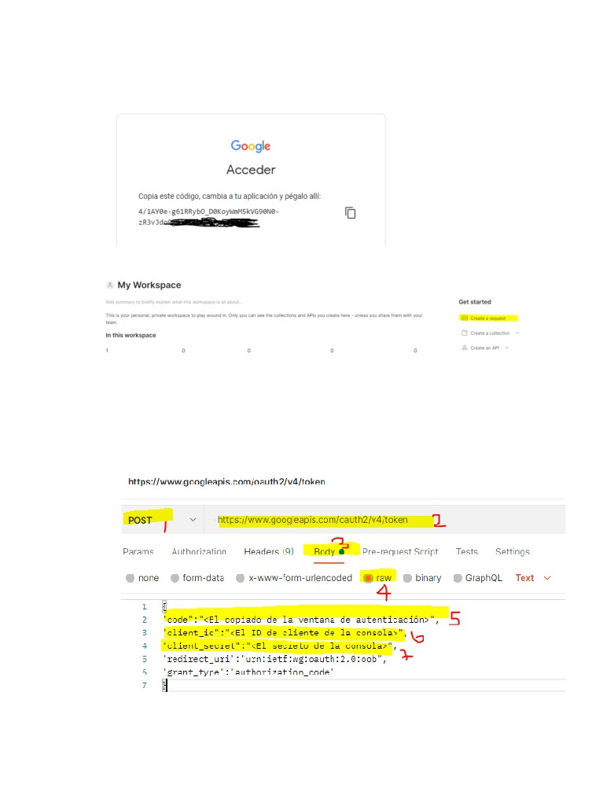
j.
Copia de la ventana siguiente el token correspondiente, este nos ayudará en la
generación del código de refresco.
k. Ahora vamos a abrir Postman, en la ventana principal seleccionar la opción “CReate
Request”:
l.
Para realizar la petición usaremos el método POST (1), con la dirección
“Body” (3) en la opción “raw” (4) y completamos los datos (después de la imagen
siguiente dejo la plantilla en texto), (5)(6)(7) son los datos que vienen de la consola
de desarrolladores de google. Code es el de autenticación, id y secreto son los del
cliente Auth2.0 creado (App de escritorio). Presionar “send” para terminar͘
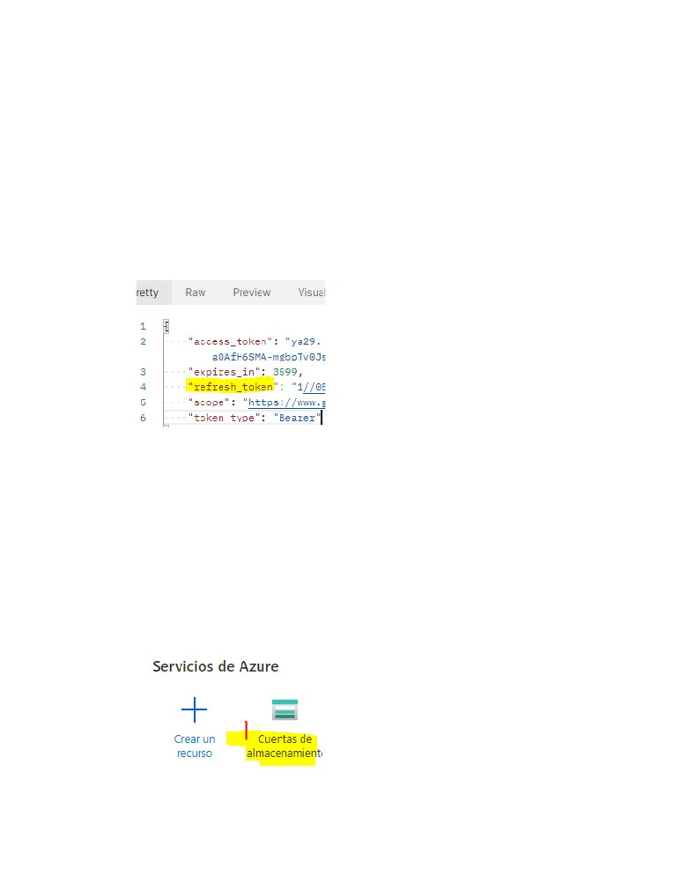
Plantilla:
{
"code":" <código> ",
"client_id":" <Id> ",
"client_secret":"< Secreto >",
"redirect_uri":"urn:ietf:wg:oauth:2.0:oob",
"grant_type":"authorization_code"
}
m. En el resultado obtenido, copiar el “refresh_token”, si no se obtuvo y aparece un
“bad_request” debe generar de nuevo el “code” haciendo el proceso de
autenticación:
n. Con esto completamos la información necesaria para ir a Azure Datafactory en el
siguiente paso.
Parte 3 (Configuración del Azure DataFactory)
En este paso vamos a configurar un pipeline de Azure DataFactory, para que nos traiga los
datos desde BigQuery, los datos quedarán alojados en un Blob Storage (también de Azure)
dentro de su respectivo contenedor y asociado a una cuenta de almacenamiento.
a. Vamos a crear una cuenta de almacenamiento, para eso vamos a la página
principal de Azure https://portal.azure.com/#home, de ahí vamos a seleccionar la
opción “Cuenta de almacenamiento”͘
b. Dentro del gestor, presionamos “agregar”
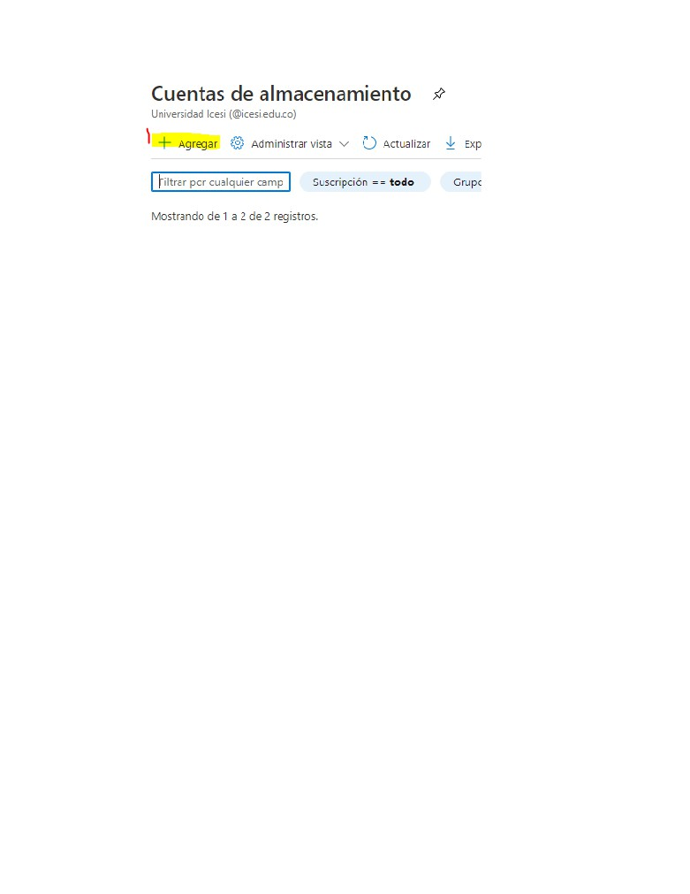
c. En la ventana que se lanza, vamos a insertar los datos. Seleccione primero una
suscripción (1), después indique cuál es el grupo de recursos (2), si no tiene
ninguno debe crear uno (2.1), después inserte el nombre de la cuenta de
almacenamiento (3), seleccione la ubicación más cercana (4), marque Estándar en
el rendimiento (5) y seleccione el tipo de cuenta en la versión más actual (6),
seleccione el nivel de redundancia deseado (7) y presione “revisar y crear” (8)͘
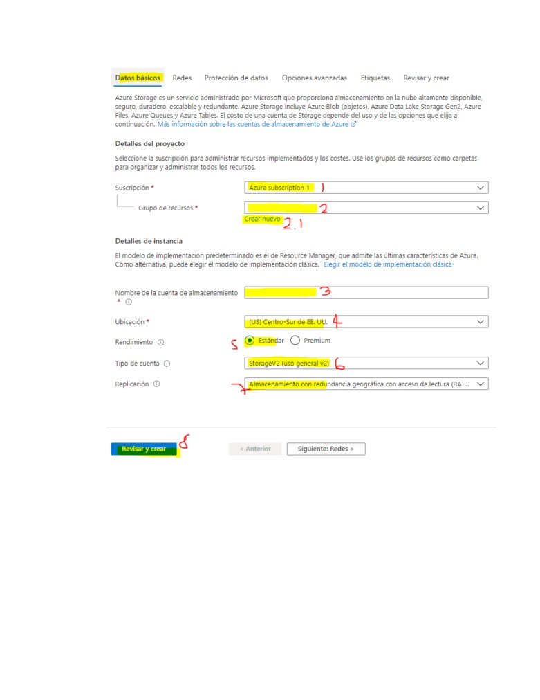
d. Dejamos los otros datos por defecto y al finalizar debemos ver la cuenta creada en
el listado de cuentas de almacenamiento.
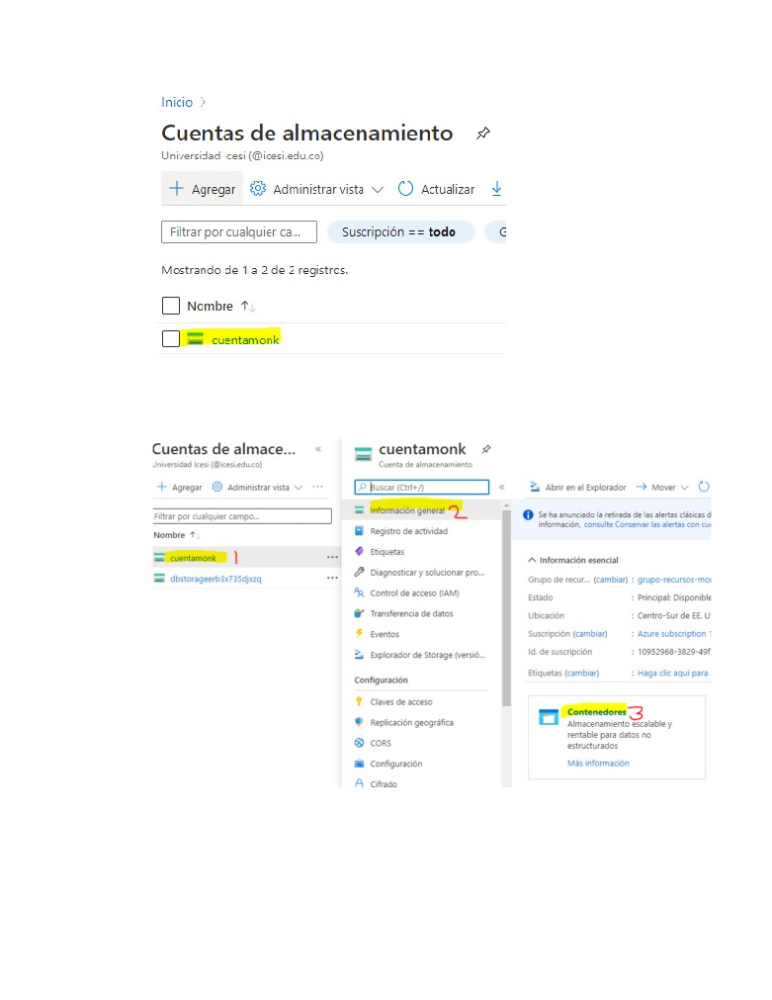
e. Ingresamos a la cuenta de almacenamiento (1) y nos disponemos a crear un
contenedor para esto (3) en la información general (2). Presionamos sobre
“contenedores”͘
f. Vamos a crear un contendor, para esto presionamos en “+Contenedor”´(1)͘ En el
costado derecho se despliega un lateral, para que insertemos el nombre del
contenedor (2), el nivel de acceso puede quedar en “privado”͘ Finalizamos
presionando el botón crear en la parte inferior del lateral.
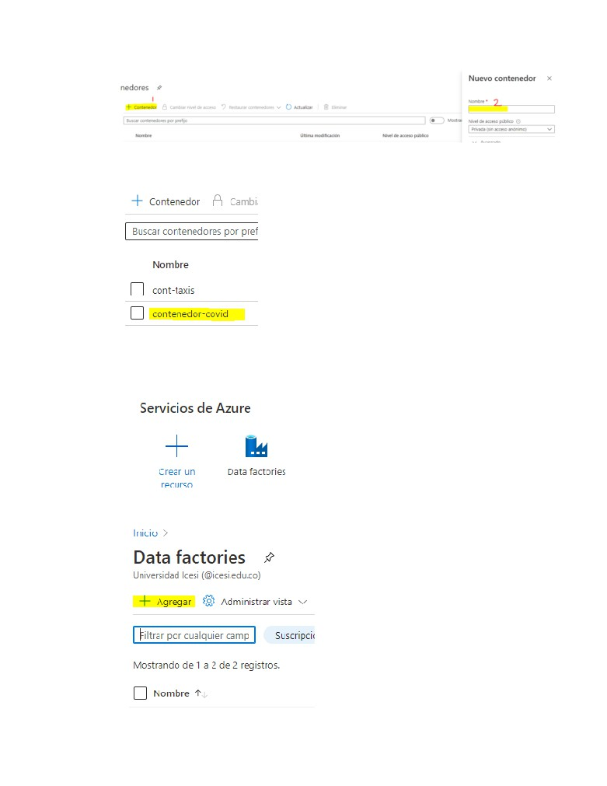
g. Al finalizar este proceso debe verse un contendor en l listado, con el nombre
seleccionado.
h. Ahora que tenemos una cuenta de almacenamiento, un grupo de recursos y un
contenedor. Vamos a comenzar con la configuración del pipeline. Para ellos vamos
a DataFactory, para ingresar regresamos al home de Azure
(https://portal.azure.com/#home) y de ahí seleccionamos DataFactories.
i.
l ingresar seleccionamos “+agregar” y eso nos lleva a la ventana de creación͘
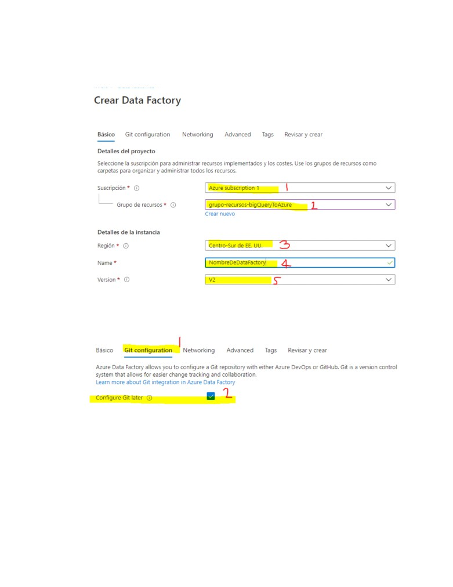
j.
En la ventana de creación, vamos a llenar los datos de la pestaña básico,
seleccionamos la suscripción (1), el grupo de recursos que ya habíamos creado (2),
asignamos una región (3) y un nombre y versión (4)(5).
k. Vamos a la pestaña de configuración de git y seleccionamos configurar después:
l.
Presionamos revisar y crear, después nuevamente en el botón crear en la parte
inferior.
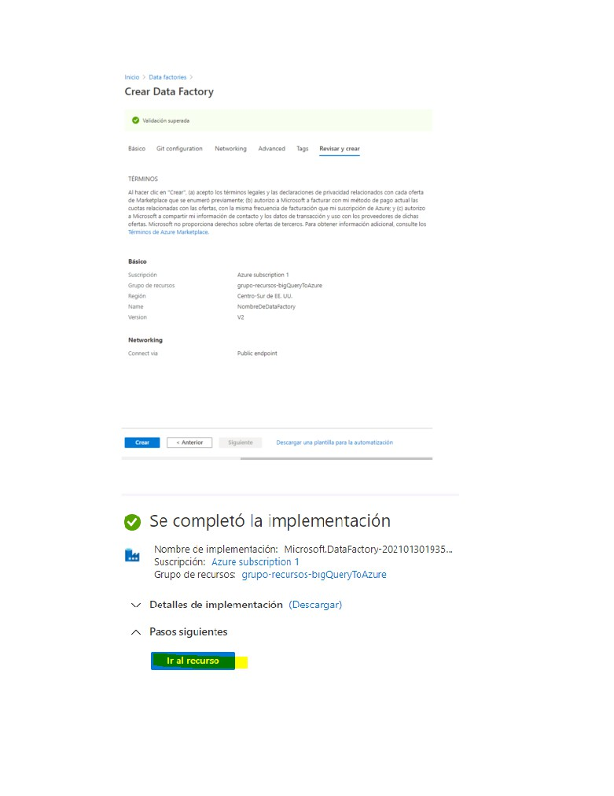
m. La implementación tomará un tiempo, pero al finalizar debes presionar “ir al
recurso”͘
n. l entrar al recurso, debemos presionar en “ uthor & Monitor”
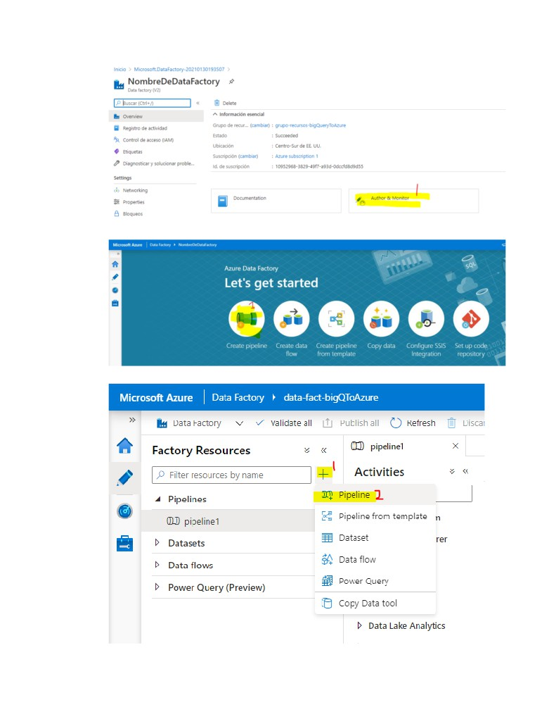
o. En la instancia, vamos a seleccionar “Create PipeLine”
p. En los recursos, presionamos + (1) y seleccionamos el pipeline (2)
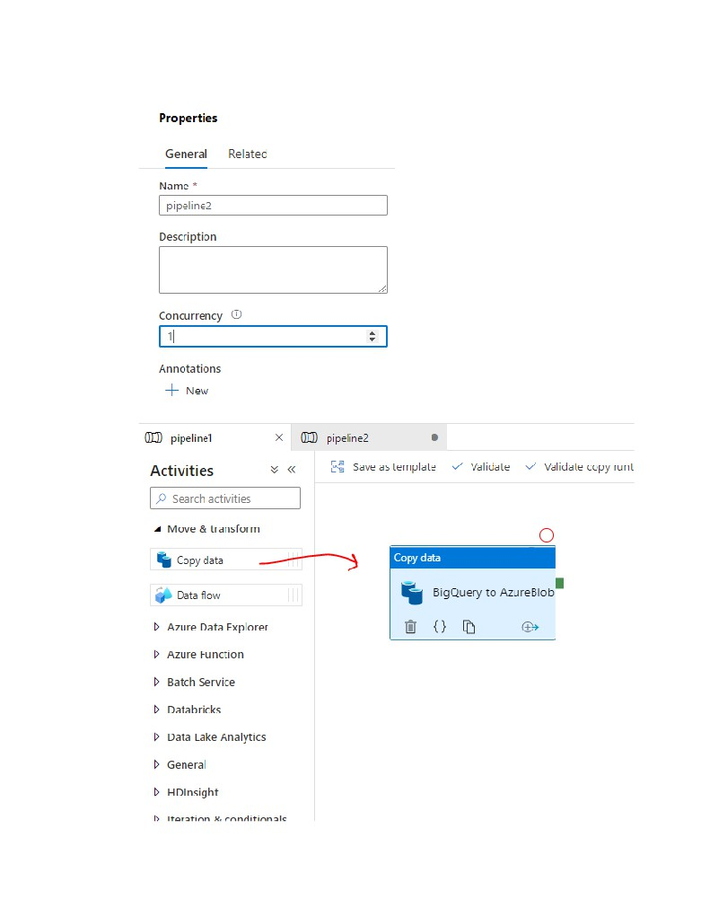
q. Después ingresamos las propiedades y listo.
r.
dicionamos un “CopyData” de las actividades (arrastrar al área de trabajo)͘
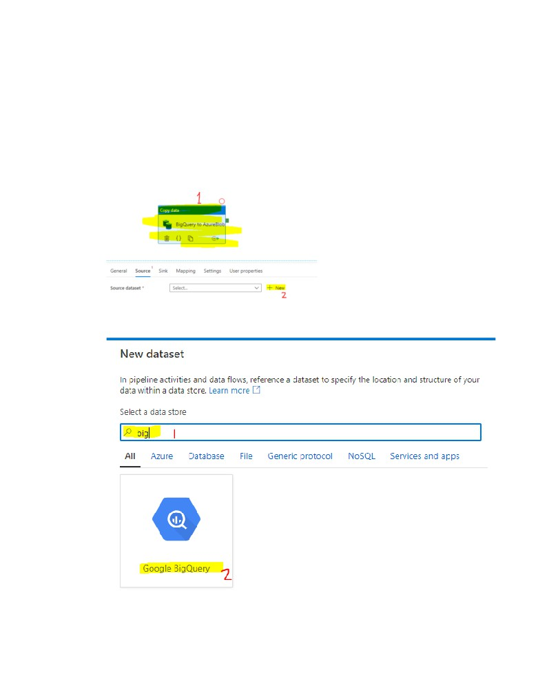
Parte 3.1 (Creación de Source & Sink en el Pipeline del Data
Factory)
a. A partir de este punto vamos a construir el Origen(Source) de los datos y el destino
(Sink). Para esto teniendo seleccionado el componente “copy data”, seleccione la
pestaña “Source” y cree un nuevo “Source dataset” presionando sobre el “+New”
(2).
b. En el lateral desplegable, escriba en la barra de búsqueda big (1) y seleccione el
componente Google BigQuery (2) y después en el botón “continue”͘
c. Para completar la Edición seleccione el componente y presione “Open”, verifique
que ha abierto el componente y en la pestaña de conexión en “Linked Service”
presione el “+New”͘
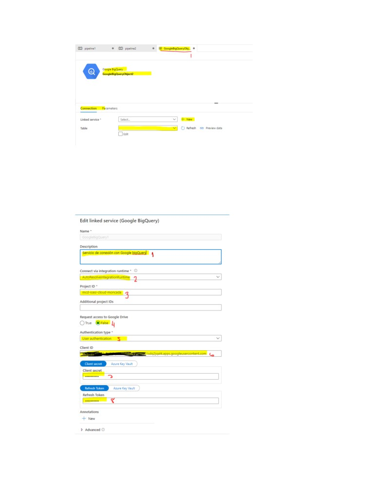
d. Al presionar New, debemos configurar la conexión usando las cadenas que
adquirimos durante el Paso de autenticación. Agregamos una descripción (1),
después dejamos que de manera automática se seleccione el runtime de
integración, sacamos el proyecto id del proyecto de BigQuery en Google Cloud
Platform (3), marcamos como falso la solictud de acceso a drive (4), Copiamos el
Client-ID que nos dieron en la consola de desarrolladores de google (5) e
introducimos el secret y el refresh token (7)(8). Y completamos el paso.
e. Realizamos la prueba de conexión y finalizamos.
f. Con la conexión probada, probada refrescamos (1) y seleccionamos la table (2).
Este nombre de tabla es el mismo que tenemos en BigQuery.
g. Con esto completamos la creación del Source. Y regresamos al Pipeline en la
pestaña para crear el Sink(1), presionamos “+New” (2) para continuar en el
proceso.
h. En el lateral desplegado, escribir “blob” en la barra de búsqueda (1) y después
seleccionar el dataset “Azure Blob Storage” (2).
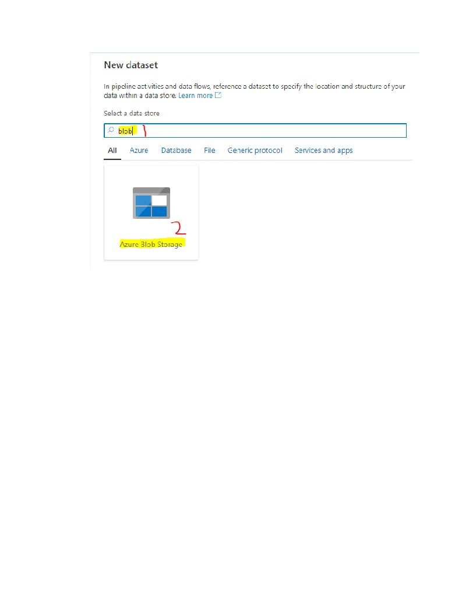
i.
En las opciones seleccionar Parquet (ocupa menos espacio, pero se tarda un poco
más en traerlo desde BigQuery).
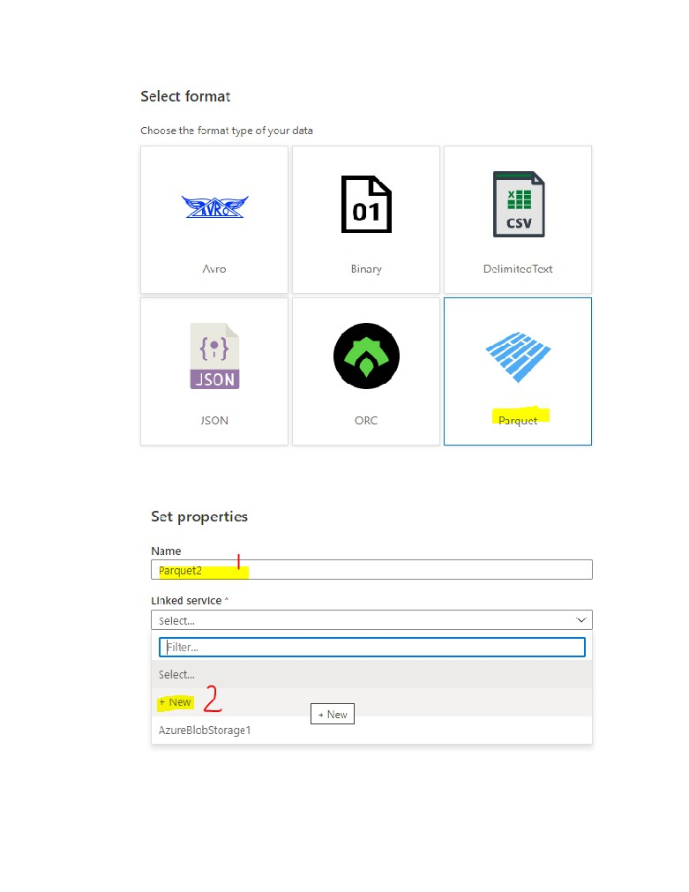
j.
Asignamos un nombre y en el “linked Service” presionamos para crear uno nuevo.
k. En el desplegable, incluimos los datos solicitados: nombre del servicio (1),
descripción (2) , indicamos que sea de una suscripción de Azure (3) y marcamos la
conexión y la cuenta (4)(5), indicamos que el tipo de prueba de conexión sea “To
linked service” (6) y probamos la conexión, una vez probada presionamos el botón
“crear” (8).
l.
Marcamos las propiedades con el nombre del parquet (1), el servicio vinculado (2)
y la ruta (seleccionando desde la carpeta (3)), indicamos que el esquema proviene
de la conexión o esquema y finalizamos con el botón “OK/Create”.
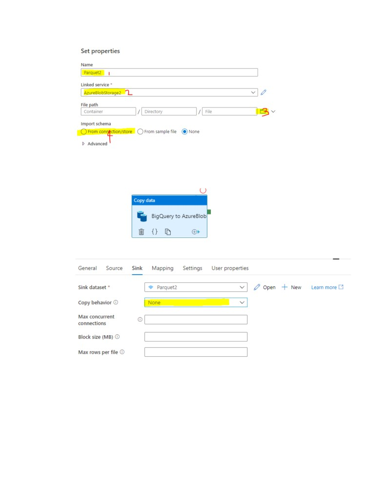
m. Dejamos en Copy behavior: None y pasamos a la pestaña de Mapping (Aquí se
puede personalizar la forma de conversión de los campos de las tablas)
n. Para traer los Esquemas desde la conexión presionamos “Import schemas” y listo.
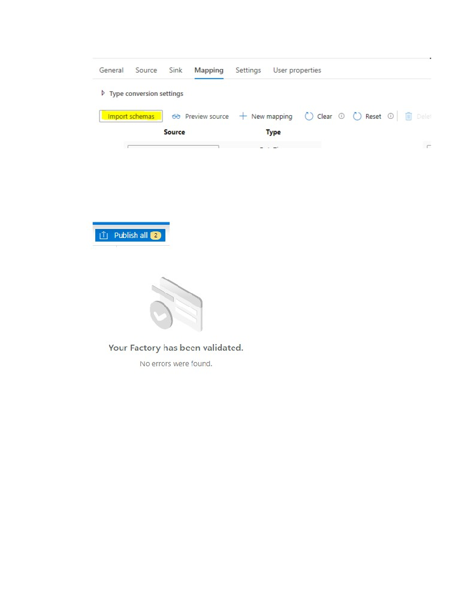
o. Terminamos, las pestañas de Settings y User Properties quedan por defecto.
p. Ahora vamos a publicar y para ello presionamos “publish all”, se debe ver un
número 3. Y debe salir que no hay errores, de lo contrario deben corregirse con las
recomendaciones que brinda la interfaz
q. Finalmente vamos a ejecutar el pipeline, para ello se selecciona el pipeline y se
presiona en “Add trigger” seguido de “Trigger now” (2).
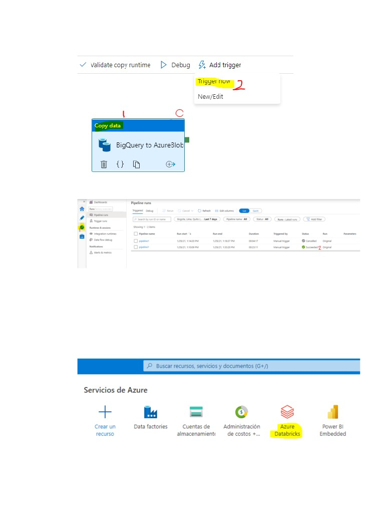
r. Al ejecutarlo, podemos ver en el monitor (1) el progreso y una vez finalizado
aparecerá verde (2).
s. Con esto se da por finalizado y ahora los datos están en Azure Blob Storage.
Parte 4 (Conexión con Azure Databricks).
Durante esta parte crearemos un cluster de Azure Databricks y probaremos algunas
consultas básicas.
a. Desde el home de Azure, ingresamos a Azure DataBricks.
b. Presionamos “+ Agregar” para crear una nueva instancia.
c. Procedemos a configurar la instancia, insertamos los datos básicos y
seleccionamos los elementos de nuestra suscripción creada.
d. Esperamos la implementación.
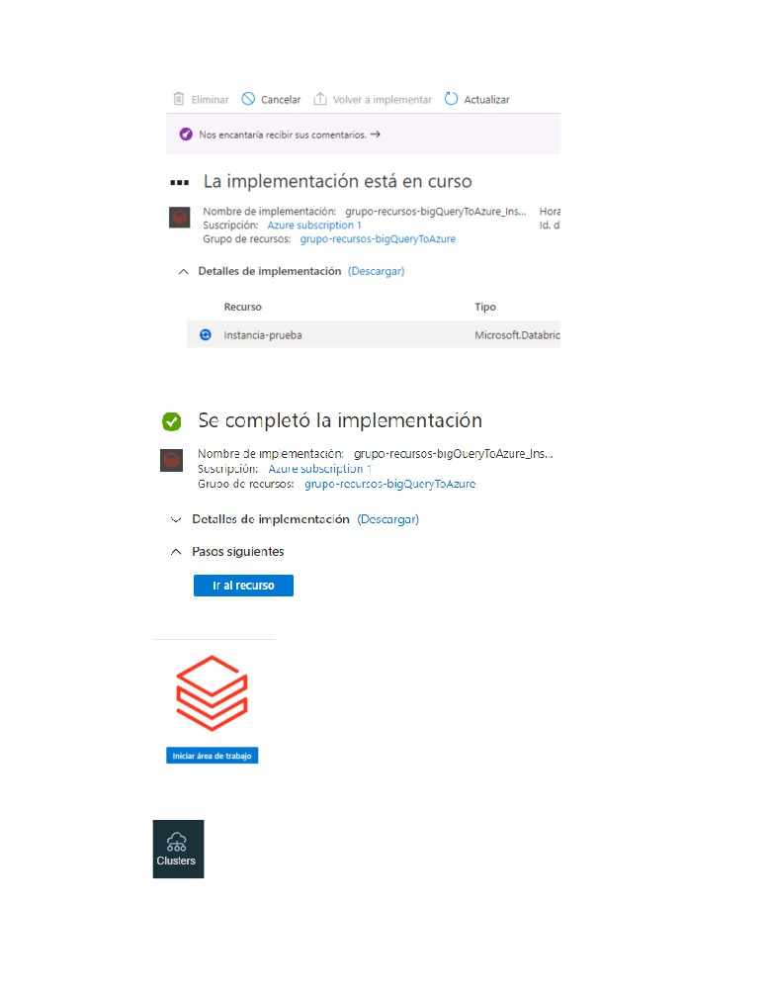
e. Al finalizar presionar en ir al recurso.
f. Presionar ir al recurso, y proceder a iniciar área de trabajo
g. Ahí en la barra izquierda seleccionamos los clusters
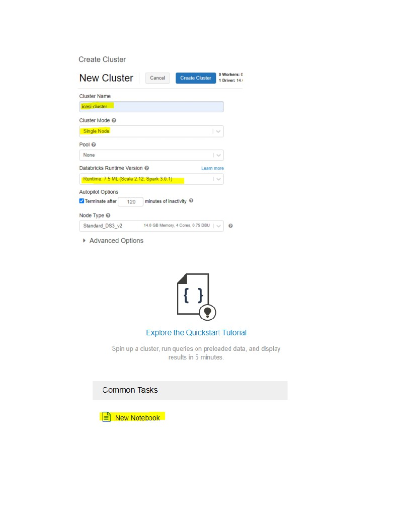
h. Asignamos un nombre, seleccionamos un solo nodo y la versión 7.5 ML sin GPU.
i.
Creamos un nuevo notebook.
j.
Incluimos el código disponible en el html (databricks) usando los datos propios de
su conexión.
k. Revisar las consultas SQL.
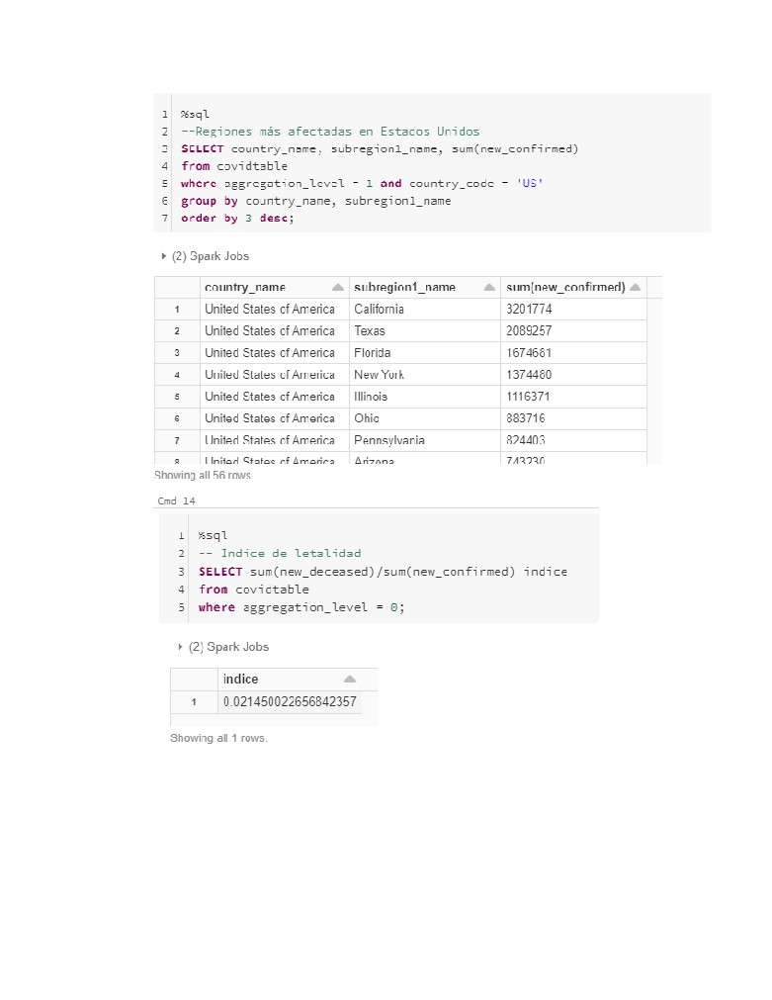
l.
Al finalizar el proceso, los datos han sido creados en el cluster y pueden ser
capturados desde PowerBI.
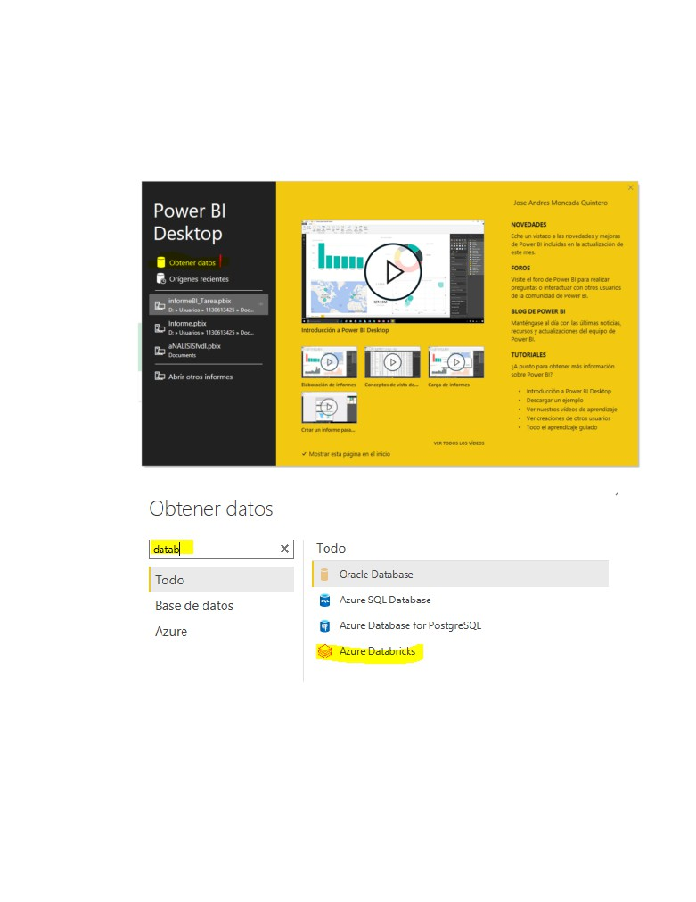
Parte 5 (Conexión con Power BI).
En esta última parte usaremos el conector que trae la versión más reciente de PowerBI
para conectarse a Azure Databricks.
a. Al iniciar Power BI, presione en obtener Datos:
b. Use la barra de búsqueda y seleccione el conector de Azure Databricks
c. Capture los datos del cluster en la configuración, opciones avanzadas. Y complete
la información solicitada por el conector.
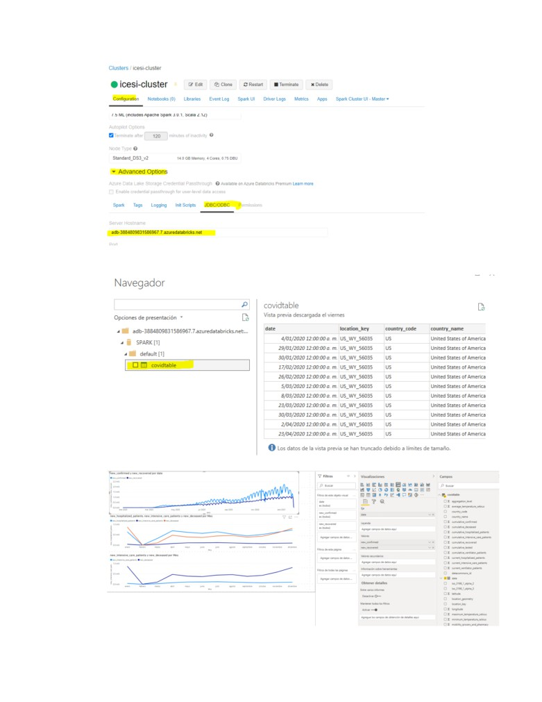
d. Navegue en el árbol de carpetas hasta la tabla y selecciónela, para después
presionar “cargar”
e. Crea algunos objetos visuales y con eso habremos finalizado el proceso.